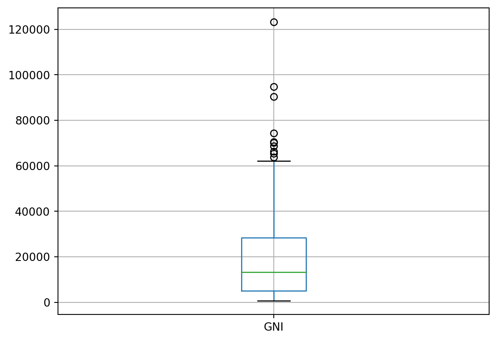
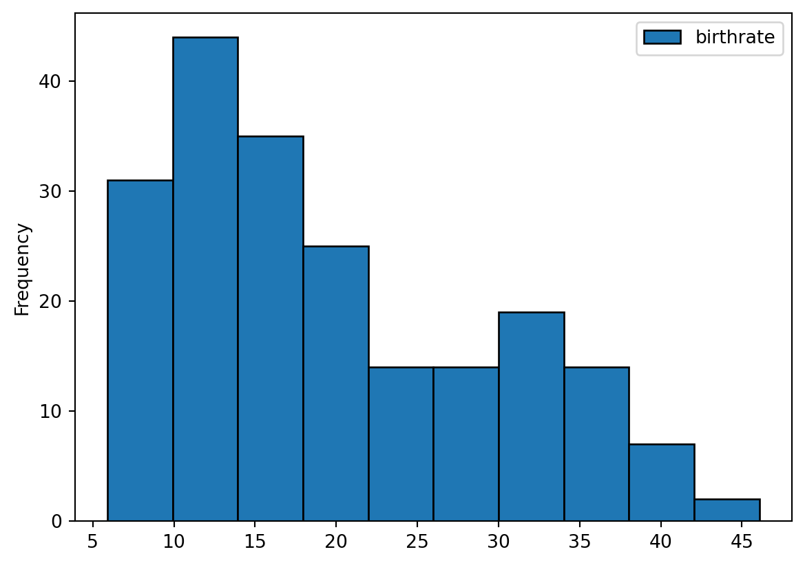
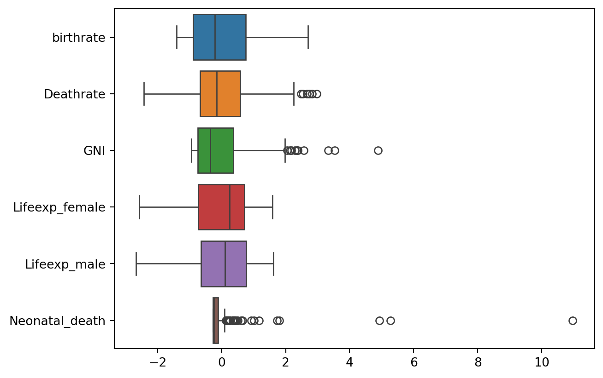
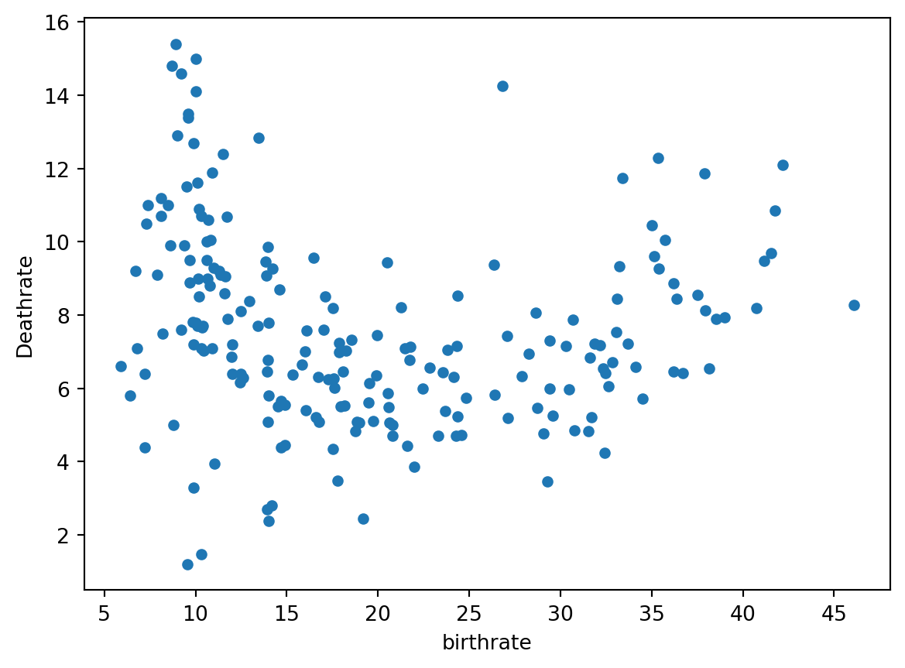
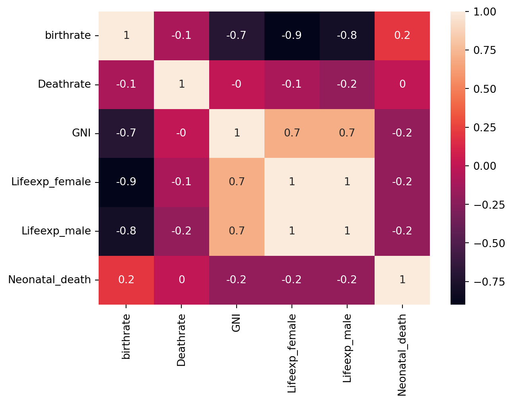

import pandas as pd
df = pd.read_excel('data/WDI_countries_v2.xlsx', sheet_name='Data4')25 Lab: Poverty and Inequality
The idea of measuring Poverty and Inequality using the case study on “The Statistics of Poverty and Inequality” (Rouncefield 1995). The questions that Mary Rouncefield asked her students were the following:
- Is the world’s wealth distributed evenly? What countries are outliers?
- Do people living in different countries have similar life expectancies?
- Do men and women have similar life expectancies? What is the average difference? What is the minimum difference? What is the maximum difference? In which countries do these occur? What are possible explanations for these differences?
- Are birth rates related to death rates?
- How quickly are populations growing?
By looking into 6 variables, you can investigate some major inequalites across the globe.
25.1 Source
In this lab, we will be using World Development Indicators dataset from worldbank, which contains the following features:

25.2 Reading the dataset
Let’s have a look at our dataset
df.head()| Country Code | birthrate | Deathrate | GNI | Lifeexp_female | Lifeexp_male | Neonatal_death | |
|---|---|---|---|---|---|---|---|
| 0 | AFG | 32.487 | 6.423 | 2260.0 | 66.026 | 63.047 | 44503.0 |
| 1 | ALB | 11.780 | 7.898 | 13820.0 | 80.167 | 76.816 | 243.0 |
| 2 | DZA | 24.282 | 4.716 | 11450.0 | 77.938 | 75.494 | 16407.0 |
| 3 | AND | 7.200 | 4.400 | NaN | NaN | NaN | 1.0 |
| 4 | AGO | 40.729 | 8.190 | 6550.0 | 63.666 | 58.064 | 35489.0 |
25.2.1 Missing values
Let’s check if we have any missing data
df.info()
df.isna().sum()<class 'pandas.core.frame.DataFrame'>
RangeIndex: 216 entries, 0 to 215
Data columns (total 7 columns):
# Column Non-Null Count Dtype
--- ------ -------------- -----
0 Country Code 216 non-null object
1 birthrate 205 non-null float64
2 Deathrate 205 non-null float64
3 GNI 187 non-null float64
4 Lifeexp_female 198 non-null float64
5 Lifeexp_male 198 non-null float64
6 Neonatal_death 193 non-null float64
dtypes: float64(6), object(1)
memory usage: 11.9+ KBCountry Code 0
birthrate 11
Deathrate 11
GNI 29
Lifeexp_female 18
Lifeexp_male 18
Neonatal_death 23
dtype: int64df.boxplot(column=['birthrate', 'Deathrate'])<Axes: >
df.boxplot(column=['Lifeexp_female', 'Lifeexp_male'])<Axes: >
df.boxplot(column=['GNI'])<Axes: >
#This is code for standarization
from sklearn import preprocessing
import numpy as np
import seaborn as sns
#Get column names first
#names = df.columns
df_stand = df[['birthrate', 'Deathrate', 'GNI', 'Lifeexp_female', 'Lifeexp_male', 'Neonatal_death']]
names = df_stand.columns
#Create the Scaler object
scaler = preprocessing.StandardScaler()
#Fit your data on the scaler object
df2 = scaler.fit_transform(df_stand)
df2 = pd.DataFrame(df2, columns=names)
df2.tail()
ax = sns.boxplot(data=df2, orient="h")
df.describe()| birthrate | Deathrate | GNI | Lifeexp_female | Lifeexp_male | Neonatal_death | |
|---|---|---|---|---|---|---|
| count | 205.000000 | 205.000000 | 187.000000 | 198.000000 | 198.000000 | 193.000000 |
| mean | 19.637580 | 7.573941 | 20630.427807 | 75.193288 | 70.323854 | 12948.031088 |
| std | 9.839573 | 2.636414 | 21044.240160 | 7.870933 | 7.419214 | 48782.770706 |
| min | 5.900000 | 1.202000 | 780.000000 | 54.991000 | 50.582000 | 0.000000 |
| 25% | 10.900000 | 5.800000 | 5090.000000 | 69.497250 | 65.533500 | 163.000000 |
| 50% | 17.545000 | 7.163000 | 13280.000000 | 77.193000 | 71.140500 | 1288.000000 |
| 75% | 27.100000 | 9.100000 | 28360.000000 | 80.776500 | 76.047500 | 7316.000000 |
| max | 46.079000 | 15.400000 | 123290.000000 | 87.700000 | 82.300000 | 546427.000000 |
df[['birthrate']].plot(kind='hist', ec='black')<Axes: ylabel='Frequency'>
import seaborn as sns
sns.pairplot(data = df.iloc[:,1:])
df.plot(x = 'birthrate', y = 'Deathrate', kind='scatter')<Axes: xlabel='birthrate', ylabel='Deathrate'>
import pandas as pd
import seaborn as sn
import matplotlib.pyplot as plt
corrMatrix = df.corr(numeric_only=True).round(1) #I added here ".round(1)" so that's easier to read given number of variables
sn.heatmap(corrMatrix, annot=True)
plt.show()
25.3 How quickly are populations growing?
This question can be investigated by calculating birth rate minus death rate. Results range from -?? (a decreasing population) to +?? (an increasing population). The mean is around ??, but what does it signify?
df['pop'] = df['birthrate'] - df['Deathrate']
df.head()| Country Code | birthrate | Deathrate | GNI | Lifeexp_female | Lifeexp_male | Neonatal_death | pop | |
|---|---|---|---|---|---|---|---|---|
| 0 | AFG | 32.487 | 6.423 | 2260.0 | 66.026 | 63.047 | 44503.0 | 26.064 |
| 1 | ALB | 11.780 | 7.898 | 13820.0 | 80.167 | 76.816 | 243.0 | 3.882 |
| 2 | DZA | 24.282 | 4.716 | 11450.0 | 77.938 | 75.494 | 16407.0 | 19.566 |
| 3 | AND | 7.200 | 4.400 | NaN | NaN | NaN | 1.0 | 2.800 |
| 4 | AGO | 40.729 | 8.190 | 6550.0 | 63.666 | 58.064 | 35489.0 | 32.539 |
df.boxplot(column=['pop'])<Axes: >